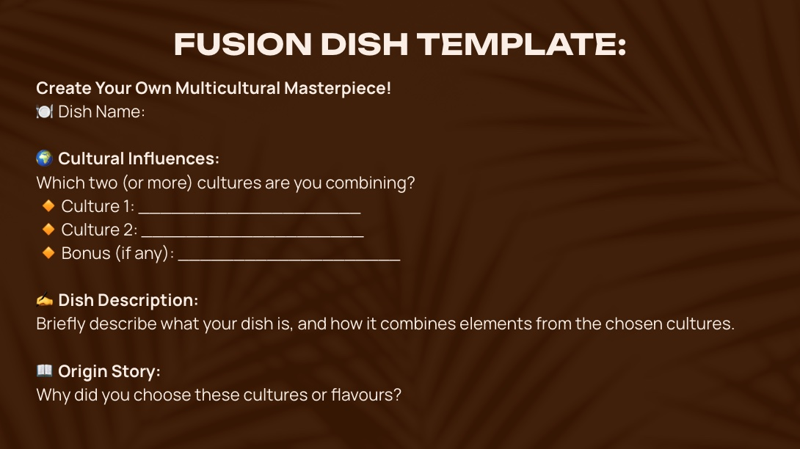

Year 9 Food Fusion Activity Template
Short worksheet covering macronutrients, label reading, and everyday food examples.
Downloadable worksheets, checklists, and templates I’ve created for Food Technology and Industrial Arts.
Short worksheet covering macronutrients, label reading, and everyday food examples.
Assessment Task Scaffold for Food Fusion Unit.
Download E-Book PDFScaffold for design brief, research, ideation, prototyping, testing, and evaluation.
Download PDF TemplateExit Activity to wrap up the lesson and to test the knowledge of the students.
Download Full lesson Slides PDF